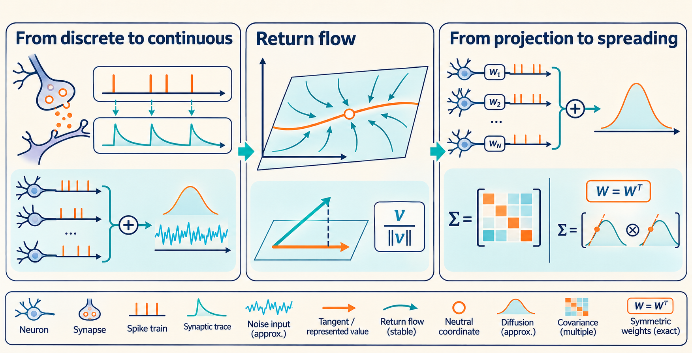
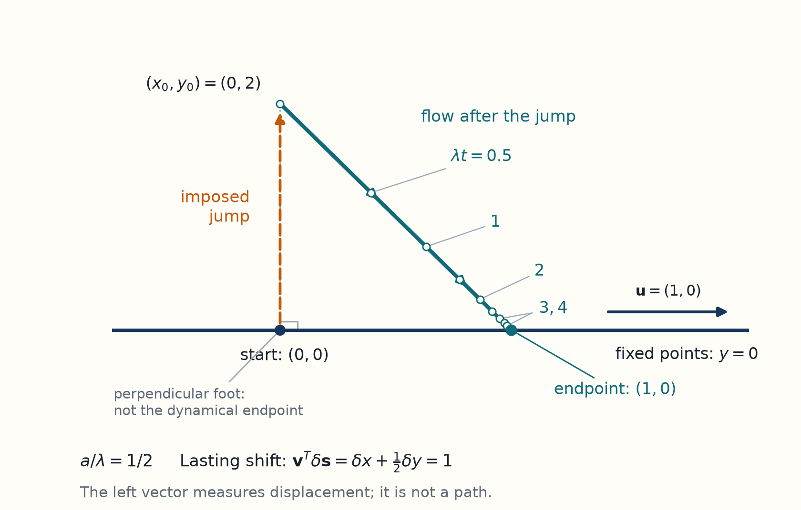
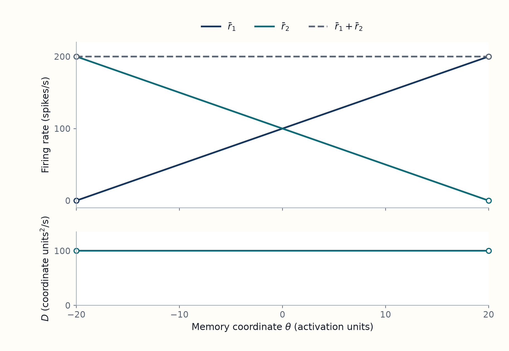

3 Spiking noise produces diffusion along the memory attractor
Starting from the neural model in Chapter 1, derive the weak-fluctuation approximation and follow small disturbances through the circuit to calculate diffusion of a stored value.
Unreviewed draft diagrams. These AI-generated images may contain incorrect or missing labels, arrows, formulas and numbers. Use the chapter text and paper links as the source for the explanation.

[Paper section: “Diffusive Drift due to Ongoing Neural Noise”] Main article, pp. 2–3. This chapter intersperses the supporting derivation with the paper’s diffusion result; the next chapter examines its simulation tests and long-delay implications.
[Paper] A network can keep firing after a stimulus disappears and still lose the value that the stimulus supplied. Burak and Fiete study this distinction in a network whose stable activity patterns form a continuous set. They ask how random spikes move the represented value along that set. For negligible systematic drift, after transients have relaxed and before the local diffusion coefficient \(D\) changes appreciably, their result gives \(\operatorname{Var}[\theta(t)-\Theta]\simeq2Dt\), where \(\theta\) is the represented value and \(\Theta\) its initial value (main article, p. 2).1
[Background] The article states its diffusion result in the main text and derives it in the supporting text. We start with the spike model from Chapter 1, replace the accumulated fluctuations by continuous noise under the authors’ assumptions, and follow one disturbance through the circuit’s return flow. The part of that disturbance that survives changes the remembered value. Adding many such changes gives the diffusion coefficient. We then examine symmetric connections and a two-cell example. The next chapter extends the calculation to longer delays.
Sources: Burak and Fiete (2012), paper and Supporting Information (SI).
[Interpretation] Here the physical network state is the vector of synaptic activations \(\mathbf s=(s_1,\ldots,s_N)\); firing rates follow from that state through the input and transfer function. The memory coordinate is \(\theta\), and its initial value is \(\Theta\). “Stored value” and “represented value” refer to this same coordinate, rather than to the whole activation vector. An observer’s estimate \(\widehat\theta\), obtained from a finite spike sample, can differ from \(\theta\).
[Paper] Noise generally puts \(\mathbf s\) slightly away from the attractor. To assign it a memory coordinate, imagine turning off further noise and following the deterministic return flow. The fixed point reached by this flow is the paper’s instantaneous attractor state; \(\theta\) labels that point. This local definition assumes that nearby states return to a unique point on the continuous family. It uses the circuit’s return dynamics, which can differ from a perpendicular geometric projection. Original definition and Figure 1A, p. 2.
[Background] A bar denotes a noise free steady state, so \(\bar r_i(\theta)\) is neuron \(i\)’s steady firing rate at memory value \(\theta\), and \(\bar s_i=\tau\bar r_i\). The common synaptic time constant is \(\tau\). A one dimensional diffusion coefficient \(D\) has units of memory coordinate squared per time, with the convention \(\operatorname{Var}[\theta(t)-\Theta]=2Dt\) when \(D\) is constant and boundaries do not matter.
[Paper: random and systematic drift] Noise can cause both random wandering and a systematic tendency to move in one direction. The main diffusion calculation assumes that the network is tuned so that systematic drift is absent or negligible. We return to the consequences of relaxing this assumption in Chapter 4. Paper, p. 2.
[Paper: short-time diffusion and Eq. 2] The paper first states the result it will derive: for short times near a chosen state, with negligible systematic drift, the mean squared change in the represented value grows approximately as \(2D(\theta)t\). For symmetric weights, its corrected expression is
\[ 2D(\theta)=\frac{\sum_i\bar r_i(g_i')^2}{\tau^2[\sum_i r_i'g_i']^2}. \]
Here \(r_i'=d\bar r_i/d\theta\) describes how neuron \(i\)’s steady firing rate changes with the represented value. Likewise \(g_i'=d\bar g_i/d\theta\) describes the change in its steady total input; \(\tau\) is the synaptic decay time. The formula is local in \(\theta\) and assumes a stable continuous family, weak fluctuations, symmetric weights, and Poisson spike generation independent across neurons conditional on the current rates. The time window must be long enough for stable disturbances to relax and many small contributions to accumulate, but short enough that the local coefficients change little. It is shown in the form given by the authors’ 2017 correction. The original article prints an uncorrected version. The derivation below explains why spike-rate variability and the rate and input slopes enter this expression; the symmetric-weight section derives it explicitly.
[Derivation: the diffusion result] The calculation needs one direction along the family of steady patterns and one rule for projecting a disturbance onto the final memory value. The tangent is \(u_i=d\bar s_i/d\theta=\tau r_i'\). Let \(K\) be the linearized return matrix, with \(K_{ij}=-\delta_{ij}/\tau+\phi'(\bar g_i)W_{ij}\). Here \(W_{ij}\) weights neuron \(j\)’s input to neuron \(i\), \(\phi'(\bar g_i)\) is the firing-rate change per unit input at the steady input \(\bar g_i\), and \(\delta_{ij}\) is one when \(i=j\) and zero otherwise. The left zero vector \(\mathbf v\) satisfies \(\mathbf v^TK=0\) and is normalized by \(\mathbf v^T\mathbf u=1\). Its component \(v_i\) is the lasting memory shift caused by a unit activation perturbation in neuron \(i\).
A local spike fluctuation in neuron \(i\) has variance \(\bar r_i\,dt\). Projecting independent fluctuations through \(\mathbf v\) gives \(d\theta=\sum_i v_i\sqrt{\bar r_i}\,dB_i\) and \(E[(d\theta)^2]=(\sum_i v_i^2\bar r_i)dt=2D\,dt\), with independent Brownian increments \(dB_i\) of variance \(dt\). Thus the general projection result is \(2D=\sum_i v_i^2\bar r_i\).
To find \(\mathbf v\) when \(W\) is symmetric, differentiate the steady-rate and input equations: \(\mathbf r'=\operatorname{diag}[\phi'(\bar g_i)]\mathbf g'\) and \(\mathbf g'=\tau W\mathbf r'\). Hence
\[ K^T\mathbf g'=-\frac{\mathbf g'}{\tau}+W^T\mathbf r'=0, \qquad v_i=\frac{g_i'}{\tau\sum_jr_j'g_j'}. \]
The second equality uses \(\mathbf v^T\mathbf u=1\) and assumes a nonzero normalization. Substituting these \(v_i\) into \(2D=\sum_i v_i^2\bar r_i\) gives the corrected formula above. This is the local weak-noise calculation; the following sections derive the Gaussian approximation, return matrix and projection step in more detail, and retain the full symmetry calculation beside the example.
[Interpretation] \(D\) measures how quickly the remembered value spreads across repeated noisy realizations. Increasing \(D\) makes the loss of precision faster; a persistent population activity pattern can therefore coexist with a drifting memory.
3.1 Many weak inputs allow a continuous approximation to spike noise
[Paper] In the weak-fluctuation limit, the authors approximate the summed effects of many spikes by Gaussian noise. In the Brownian notation used here, their local noisy activation equation is
\[ ds_i=\left[-\frac{s_i}{\tau}+\phi(g_i)\right]dt+\sqrt{r_i}\,dB_i, \qquad r_i=\phi(g_i),\quad g_i=\sum_jW_{ij}s_j+b_i. \]
\(s_i\) is neuron \(i\)’s synaptic activation, \(\tau\) its decay time, \(g_i\) its total input, and \(r_i\) its firing rate. \(W_{ij}\) weights the activation sent from neuron \(j\) to \(i\), \(b_i\) is its constant input, and \(\phi\) maps total input to firing rate. \(dB_i\) is a Brownian increment with mean zero and variance \(dt\), independent across neurons in this approximation. This is a continuous approximation to the effects of many small spike contributions, not a claim that an individual spike count is continuous. The assumptions and population-size argument appear in Materials and Methods, Eqs. 10–11, PDF pp. 5–6, and supporting text, section I, Eqs. S1–S6, PDF pp. 1–2. The following steps derive this teaching notation.
[Interpretation] Chapter 1 established the spike, activation and firing-rate model, Eqs. 7–9. The connection-matrix explanation establishes the feedback role of those connections. Here we calculate how random spike timing makes activation fluctuate. The connections are tuned to a continuous family of steady patterns, and the Gaussian approximation assumes small fluctuations in each neuron’s total input.
[Derivation] To see what the approximation replaces, start from \(ds_i=-s_i\,dt/\tau+dN_i\). The elementary spike-generation noise is independent across neurons conditional on the present rates. The count and Brownian steps below expand the authors’ argument; the individual spike process itself remains discrete.
[Derivation] Conditioned on the present rates, the spike-count increments have the following leading-order infinitesimal mean and covariance. This does not assert independence of finite-interval counts when recurrent feedback changes the rates. Let \(\delta_{ij}\) be one when \(i=j\) and zero otherwise:
\[ E[dN_i\mid r_i]=r_i\,dt, \qquad \operatorname{Cov}(dN_i,dN_j\mid\mathbf r) =\delta_{ij}r_i\,dt. \]
[Derivation] Write \(dM_i=dN_i-r_i\,dt\) for the spike count minus its conditional mean: the surplus or deficit of spikes in this interval. Splitting the count into its mean and this fluctuation gives
\[ ds_i=\left[-\frac{s_i}{\tau}+\phi(g_i)\right]dt+dM_i, \qquad E[dM_i\mid\mathbf r]=0, \quad E[dM_i dM_j\mid\mathbf r]=\delta_{ij}r_i\,dt. \]
[Interpretation] The split into a mean and a fluctuation leaves the individual spike events unchanged. Each spike raises \(s_i\) by one, and \(s_i\) decays between spikes. In the paper’s weak fluctuation approximation, many individually small spike contributions produce only small changes in each neuron’s total input. Their summed fluctuation can then be represented by Gaussian noise with the same leading mean and covariance. Many suitably independent contributions justify the approximately Gaussian sum; matching mean and covariance alone would not establish its distribution. The approximation describes a summed input on a scale where many small contributions matter. A single neuron’s count in an infinitesimal interval remains a discrete spike count.
Example: how many small spike inputs approach a Gaussian
[Example] Suppose \(n\) cells fire independently at the same constant rate \(r\) during an interval \(h\), and each spike adds \(1/n\) to a receiving cell’s input. The total number of spikes is Poisson with mean \(nrh\), so the summed input has mean \(rh\) and variance \(rh/n\). When \(nrh\) is large, the standardized total count is approximately Gaussian: no single spike supplies a large share of the summed input. Increasing \(n\) keeps the mean input fixed while shrinking its fluctuations.
This example holds the rates fixed during the interval. In a recurrent network the rates change with the state, so the approximation must also use intervals short enough for the rates to change little. Synaptic activation sums and smooths spike effects over its decay time \(\tau\). The approximation does not say that each cell produces many spikes in every infinitesimal interval.
[Derivation] Each receiving cell sees a weighted sum \(g_i=\sum_j W_{ij}s_j+b_i\). With fixed weights, the random part of its input increment is \(\sum_jW_{ij}\,dM_j\). Conditional independence gives its leading covariance with the corresponding increment of receiver \(k\):
\[ \operatorname{Cov}(dg_i,dg_k\mid\mathbf r) =\sum_jW_{ij}W_{kj}r_j\,dt. \]
[Interpretation] The same presynaptic fluctuation can affect both receivers, so their summed inputs can be correlated even when spike generation is conditionally independent. In the weak-fluctuation limit, the paper approximates the summed and synaptically smoothed input as Gaussian. It can represent that approximation using a separate Gaussian drive for each activation variable: multiplying those drives by \(W\) gives the input covariance above.
[Derivation] Let \(F_i(\mathbf s)\) be the mean rate of change of neuron \(i\)’s activation. Let \(B_i\) be independent standard Brownian motions. The increment \(dB_i=B_i(t+dt)-B_i(t)\) has mean zero and variance \(dt\). Multiplying it by \(\sqrt{r_i}\) gives the same leading variance \(r_i\,dt\) as the centered spike count. The Gaussian representation of the activation equation is
\[ ds_i=F_i(\mathbf s)dt+\sqrt{r_i}\,dB_i, \qquad F_i(\mathbf s)=-s_i/\tau+\phi\!\left(\sum_jW_{ij}s_j+b_i\right), \]
[Interpretation] The noise coefficient has units \(\mathrm{s}^{-1/2}\), so its product with \(dB_i\) is a dimensionless activation increment. The Brownian drives are a representation of the approximated summed-input dynamics; they are not a claim that an individual neuron’s discrete spike path or its isolated synaptic activation is Gaussian. The supplement derives the equivalent input equations after making the Gaussian approximation (SI Eqs. S2–S5, p. 2).2
[Paper] The supplement makes this limit concrete by replacing each population with \(n\) equivalent neurons and dividing each connection weight by \(n\). A summed input has a mean proportional to \(n/n=1\), while its variance is proportional to \(n/n^2=1/n\). Increasing population size therefore keeps the mean dynamics fixed and reduces input fluctuations. For a ring network, a neuron’s preferred angle is an angle where its tuning curve peaks. Increasing the density of equally spaced preferred angles and scaling weights as \(1/N\) serves the same purpose. The paper’s formulas give the leading terms in this large population limit, rather than exact finite network identities.3
[Paper] Setting noise to zero gives the deterministic rate dynamics \(\dot{\mathbf s}=\mathbf F(\mathbf s)\). The continuous family of fixed points satisfies main Eq. 1, p. 2:
\[ 0=-\frac{\bar s_i(\theta)}{\tau} +\phi[\bar g_i(\theta)], \qquad \bar s_i(\theta)=\tau\bar r_i(\theta). \]
[Interpretation] In the noise free dynamics, recurrent firing balances synaptic decay at each fixed point. The network must be tuned to possess this family. An arbitrary recurrent network will generally have isolated fixed points rather than a whole line or ring of them.
3.2 The network’s return flow determines the lasting memory change
[Paper] The authors write \(s_i=\bar s_i(\theta)+\delta s_i\) and linearize around the steady pattern. The perturbation obeys \(\delta\dot s_i=\sum_jK_{ij}\delta s_j+\xi_i\), with \(K_{ij}=-\delta_{ij}/\tau+\phi'(\bar g_i)W_{ij}\). Here \(\xi_i\) is spike noise, \(\delta_{ij}\) is one when \(i=j\) and zero otherwise, \(\tau\) is the activation decay time, and \(W_{ij}\) weights activation from neuron \(j\) to \(i\). The derivative \(\phi'(\bar g_i)\) is the change in neuron \(i\)’s firing rate per unit change in its input, evaluated at its steady input \(\bar g_i\). The component that survives after the stable disturbances decay is a displacement along the family of fixed patterns. See supporting text, Eqs. S7–S13, PDF p. 3; the steps below expand the calculation.
[Interpretation] A spike perturbs many aspects of a network’s state. Most of those changes decay as the state returns to the attractor. To calculate memory loss, we need the lasting change: the displacement to a different fixed point. We assume a smooth continuous family with one neutral memory direction, while all other local modes decay. The disturbance must be small enough that the first order response describes the return flow.
[Derivation] The supplement’s Eq. S7 writes \(s_i=\bar s_i(\theta)+\delta s_i\). Fix the reference value \(\theta\) while analyzing a small change, so \(\bar s_i\) does not change with time and \(\dot s_i=\delta\dot s_i\). Ignoring noise for a moment, substitute this expression into the deterministic activation equation:
\[ \delta\dot s_i=-\frac{\bar s_i+\delta s_i}{\tau} +\phi\!\left(\bar g_i+\sum_jW_{ij}\delta s_j\right), \qquad \bar g_i=\sum_jW_{ij}\bar s_j+b_i. \]
The change in input to neuron \(i\) is \(\sum_jW_{ij}\delta s_j\). A linearization keeps terms proportional to a small perturbation and drops terms quadratic or higher in it. Taylor expansion of the transfer function gives
\[ \phi\!\left(\bar g_i+\sum_j W_{ij}\delta s_j\right) \simeq\phi(\bar g_i)+\phi'(\bar g_i)\sum_jW_{ij}\delta s_j. \]
[Derivation] Substitute this expansion into the previous equation. The terms \(-\bar s_i/\tau+\phi(\bar g_i)\) cancel because the reference pattern is a fixed point. What remains is
\[ \delta\dot s_i=-\frac{\delta s_i}{\tau} +\phi'(\bar g_i)\sum_jW_{ij}\delta s_j. \]
Thus the first term makes a disturbance decay, and the second passes it through the network. Writing \(-\delta s_i/\tau\) as \(-\sum_j\delta_{ij}\delta s_j/\tau\) gives the paper’s matrix \(K\). Restoring the leading Gaussian noise gives the following Brownian form of S8 and S9. Here \(R\) is the diagonal matrix of spike-count variance rates at the fixed point:
\[ d\delta\mathbf s=K\delta\mathbf s\,dt+R^{1/2}d\mathbf B, \qquad K_{ij}=-\frac{\delta_{ij}}{\tau}+\phi'(\bar g_i)W_{ij}, \qquad R=\operatorname{diag}(\bar r_i). \]
[Paper] In the authors’ notation, \(\delta\dot s_i=\sum_jK_{ij}\delta s_j+\xi_i\), with \(K_{ij}=-\delta_{ij}/\tau+\phi'(\bar g_i)W_{ij}\). Their noise covariance is \(\langle\xi_i(t)\xi_j(t')\rangle=\delta_{ij}\delta(t-t')\bar r_i\). This is the linearization and noise rule in S8–S10, p. 3; the display above writes the same leading fluctuations as Brownian increments.4
[Interpretation: network response] The Brownian increment above is an equivalent leading local notation, with noise strengths evaluated at the fixed point. The entries of \(K\) have units of inverse time.
\(K_{ij}\) says how a small change in neuron \(j\)’s activation changes the rate at which neuron \(i\)’s activation evolves, near the reference state. The term \(-\delta_{ij}/\tau\) removes a disturbance as synaptic activation fades. The term \(\phi'(\bar g_i)W_{ij}\) describes recurrent renewal: the connection converts a change in cell \(j\)’s activation into input to cell \(i\), and the local slope of the transfer function converts that input into a rate change. A steeper slope makes this response stronger. Whether a disturbance decays, persists, or grows depends on the combined feedback through the whole network. A stronger connection alone does not establish better memory.
[Derivation] To see how the matrix controls time, temporarily switch off the noise and consider a disturbance in a right eigenvector direction \(\mathbf z\), with \(K\mathbf z=\lambda\mathbf z\). If it starts at \(c\mathbf z\), the linear equation gives \(\delta\mathbf s(t)=c e^{\lambda t}\mathbf z\). A negative real eigenvalue makes that component decay; a zero eigenvalue leaves it unchanged. Complex eigenvalues describe oscillating combinations, which decay when their real parts are negative. The attractor calculation assumes all directions away from its neutral tangent decay. Even if the matrix is not diagonalizable, stable components can have transient polynomial factors but still decay when their eigenvalues have negative real parts.
[Paper] The tangent to the fixed-pattern family is \(u_i=d\bar s_i/d\theta=\tau\phi'(\bar g_i)\,d\bar g_i/d\theta\). It is a right zero mode, \(K\mathbf u=0\): a small displacement along this direction changes the represented value without being restored by the noise-free linear dynamics. This is supporting text, Eq. S11, PDF p. 3. The derivative steps below explain why.
[Derivation] Moving a little along the fixed point family changes the activation by
\[ \delta\mathbf s\simeq\mathbf u\,\delta\theta, \qquad u_i=\frac{d\bar s_i}{d\theta}=\tau\frac{d\bar r_i}{d\theta}. \]
Differentiate the fixed point equation \(\mathbf F[\bar{\mathbf s}(\theta)]=0\). The chain rule gives
\[ K\mathbf u=0. \]
[Interpretation] Thus \(\mathbf u\) is a right zero eigenvector: a state direction that the linear dynamics neither restores nor amplifies. It is the tangent to the attractor. The other modes must decay for this local family to be attracting.
[Paper] The left vector \(\mathbf v\) is chosen so \(\mathbf v^T K=0\) and \(\mathbf v^T\mathbf u=1\). It extracts the lasting coordinate displacement: for a small perturbation \(\delta\mathbf s\), \(\delta\theta=\mathbf v^T\delta\mathbf s\). Its components weight the different neurons’ contributions. These are supporting text, Eqs. S12–S13, PDF p. 3. The tilted two-variable example below is an illustrative construction.
[Interpretation] To extract the lasting memory displacement from a general perturbation, recall the left zero eigenvector, a vector \(\mathbf v\) satisfying
\[ \mathbf v^T K=0, \qquad \mathbf v^T\mathbf u=1. \]
[Derivation] The normalization makes \(\mathbf v^T(\mathbf u\,\delta\theta)=\delta\theta\). If a stable mode \(\mathbf z\) satisfies \(K\mathbf z=\lambda\mathbf z\) with \(\lambda\ne0\), then
\[ 0=\mathbf v^T K\mathbf z=\lambda\mathbf v^T\mathbf z, \]
so \(\mathbf v^T\mathbf z=0\). The left vector discards every decaying mode (SI Eqs. S12–S13, p. 3). More generally, \(\mathbf v^T K=0\) makes \(\mathbf v^T\delta\mathbf s\) constant during the noise-free linear return, even when stable modes are not a complete eigenvector basis. Once those modes decay, this constant is the remaining coordinate change. Consequently the surviving part of a small perturbation is
\[ \delta\mathbf s_{\mathrm{surviving}} =\mathbf u\,(\mathbf v^T\delta\mathbf s). \]
[Interpretation] This generally differs from a perpendicular geometric projection. Decay can be tilted relative to the tangent. Even symmetric synaptic weights do not usually make \(K\) symmetric, because \(\phi'(\bar g_i)\) multiplies different rows by different amounts.
Example: a disturbance that slides while it decays.
[Example] To see the distinction without a neural simulation, let \(x\) and \(y\) be dimensionless state coordinates and consider the local system
\[ \dot x=ay,\qquad \dot y=-\lambda y,\quad\lambda>0, \qquad [a]=[\lambda]=\mathrm{s}^{-1}. \]
Every point with \(y=0\) is fixed. Starting from \((x_0,y_0)\) gives \(y(t)=y_0e^{-\lambda t}\) and
\[ x(\infty)=x_0+\frac{a}{\lambda}y_0. \]
The response matrix and its neutral vectors are
\[ K=\begin{pmatrix}0&a\\0&-\lambda\end{pmatrix},\qquad \mathbf u=\begin{pmatrix}1\\0\end{pmatrix},\qquad \mathbf v=\begin{pmatrix}1\\a/\lambda\end{pmatrix}. \]
The right vector \(\mathbf u\) points along the fixed-point line. The left vector \(\mathbf v\) reads out the final shift: \(\mathbf v^T(x_0,y_0)=x_0+(a/\lambda)y_0\). The decaying eigenvector is \(\mathbf z=(-a/\lambda,1)^T\), with \(K\mathbf z=-\lambda\mathbf z\) and \(\mathbf v^T\mathbf z=0\). A vertical perturbation changes the final memory whenever \(a\ne0\). A perpendicular projection would miss that change. This is a teaching example of the projection geometry, not an additional network used in the paper.

As \(y\) decays, \(x\) changes by one. The left vector extracts that lasting shift.
3.3 Projecting spike fluctuations gives the diffusion coefficient
[Paper] Projecting spike fluctuations onto the lasting memory change gives the general local result (supporting text, Eqs. S14–S15, PDF p. 3):
\[ 2D(\theta)=\sum_i v_i(\theta)^2\bar r_i(\theta). \]
Here \(\bar r_i\) is neuron \(i\)’s steady firing rate and \(v_i\) is the lasting shift in the memory coordinate caused by a unit perturbation of its synaptic activation after the other disturbances decay. The rate \(\bar r_i\) supplies the local Poisson spike-count variance; \(v_i^2\) weights how strongly it shifts the stored value. The assumptions include weak fluctuations and independent spike generation conditional on the current rates. The main article’s diffusion discussion, PDF p. 2, states its role in memory loss; the steps below derive it.
[Interpretation] We can now calculate how much random displacement remains after the stable components have relaxed. Each cell’s random spikes disturb its outgoing synaptic activation. The circuit’s return flow determines the lasting shift in memory. This calculation uses the weak noise and conditional independence assumptions, with rates and return flow evaluated near one fixed point.
[Derivation] Recall the projection vector \(\mathbf v\) derived above: a small disturbance \(\delta\mathbf s\) leaves a coordinate shift \(\delta\theta=\sum_i v_i\delta s_i\) after the other components decay. Thus \(v_i\) is the lasting change in the represented value per unit change in neuron \(i\)’s synaptic activation, in this local linear model. These projection coefficients describe the whole circuit’s response; they are distinct from its connection weights \(W_{ij}\).
The variance of a linear combination of independent noise increments is the sum of their variances multiplied by squared weights. Let \(K\) be the matrix of the linearized return dynamics, \(R\) the diagonal matrix with entries \(R_{ii}=\bar r_i\), and \(d\mathbf B\) the vector of independent Brownian increments. Multiplying the linear stochastic equation by \(\mathbf v^T\) removes its deterministic return term because \(\mathbf v^TK=0\), leaving
\[ d\theta=\mathbf v^T R^{1/2}d\mathbf B =\sum_i v_i\sqrt{\bar r_i}\,dB_i. \]
Here \(\delta_{ij}\) equals one if \(i=j\) and zero otherwise. The independent Brownian increments have covariance \(E[dB_i dB_j]=\delta_{ij}dt\), so
\[ E[(d\theta)^2] =\sum_{ij}v_iv_j\sqrt{\bar r_i\bar r_j}\,E[dB_i dB_j] =\left(\sum_i v_i^2\bar r_i\right)dt. \]
Matching this to \(2D\,dt\) yields the general local result (SI Eqs. S14–S15, p. 3)
\[ \boxed{2D(\theta)=\sum_i v_i(\theta)^2\bar r_i(\theta).} \]
[Interpretation: local diffusion] For one memory coordinate, each neuron’s contribution combines its spike variability, \(\bar r_i\), with the squared effect of one activation fluctuation on the final memory, \(v_i^2\). The formula does not say that neurons with high rates necessarily damage memory more: changing rates can also change the tuning curves and the projection coefficients. Those changes must be included in a comparison.5
The result is local in state and leading order in weak noise. The time interval must satisfy two conditions:
- It must be long enough for the approximation based on many spike contributions to apply.
- It must be short enough that the coefficients do not change substantially as the memory moves.
These conditions justify a local spreading rate.
[Paper] For several memory coordinates \(\theta_\alpha\), the authors define their local displacement covariances by \(\langle\Delta\theta_\alpha\Delta\theta_\beta\rangle=2D_{\alpha\beta}\Delta t\) and obtain \(2D_{\alpha\beta}=\sum_i v_i^\alpha\bar r_i v_i^\beta\). Here \(\mathbf v^\alpha\) extracts the lasting change of coordinate \(\alpha\), and \(\bar r_i\) sets neuron \(i\)’s local Poisson noise strength. This result and its conditions are in supporting text, Eqs. S21–S27, PDF pp. 5–6. The paired-vector example that follows is an additional illustration.
[Derivation] For several memory coordinates \(\theta_\alpha\), choose tangent vectors \(u_i^\alpha=\partial\bar s_i/\partial\theta_\alpha\) and left zero vectors \(\mathbf v^\alpha\) satisfying \((\mathbf v^\alpha)^T K=0\) and \(\sum_i v_i^\alpha u_i^\beta=\delta_{\alpha\beta}\). A unit change of coordinate \(\beta\) moves the activation along \(\mathbf u^\beta\). The projection vector \(\mathbf v^\alpha\) extracts one unit when \(\alpha=\beta\) and zero when the two coordinates differ. It also discards the decaying activity components. Thus \(\sum_i v_i^\alpha\delta s_i\) gives the lasting local change in coordinate \(\alpha\). The same covariance calculation gives
\[ 2D_{\alpha\beta}=\sum_i v_i^\alpha\bar r_i v_i^\beta. \]
[Interpretation] In this local approximation, the diffusion tensor is the matrix of displacement covariances divided by twice the elapsed time over a short interval. Its diagonal entries describe spreading in individual coordinates. Its other entries describe how coordinate displacements vary together. Even independently generated spike-count fluctuations can generate coupled motion of the represented coordinates.6
Example: reading two coordinates from tilted directions
[Example] Suppose two coordinate changes alter two activities along \(\mathbf u^1=(1,0)^T\) and \(\mathbf u^2=(1,1)^T\). A change by \(a\) in the first coordinate and \(b\) in the second gives the combined activity change \((a+b,b)^T\). The corresponding projection vectors are \(\mathbf v^1=(1,-1)^T\) and \(\mathbf v^2=(0,1)^T\): their dot products with the combined change give \(a\) and \(b\), respectively. For example, \(\mathbf v^1\) removes the contribution of the second coordinate because \((\mathbf v^1)^T\mathbf u^2=0\). This is a geometric example of the paired vectors; it does not specify a biological circuit.
Systematic drift requires a separate check in the next chapter.
3.4 Symmetric weights express diffusion through tuning curves
[Paper] For symmetric weights \(W_{ij}=W_{ji}\), the corrected result is \(2D=\sum_i\bar r_i(g_i')^2/[\tau^2(\sum_i r_i'g_i')^2]\), where \(r_i'=d\bar r_i/d\theta\) and \(g_i'=d\bar g_i/d\theta\) are the response and input slopes along the memory family. This is main article, Eq. 2, PDF p. 2, with the authors’ 2017 correction; supporting text, Eqs. S16–S18, PDF p. 4, derives it. The derivation below supplies the intermediate steps.
[Interpretation] The general formula uses the projection vector \(\mathbf v\) derived from the network’s dynamics. The distinct matrix \(W\) contains the connection weights: \(W_{ij}\) describes the effect of neuron \(j\)’s synaptic activation on neuron \(i\)’s input. If each pair has equal connection weights in opposite directions, \(W_{ij}=W_{ji}\), can we express \(\mathbf v\) through the tuning curves and neural transfer function? Equal connection weights do not require equal firing responses. We retain the common synaptic time constant, a stable continuous family, and the weak noise and conditional independence assumptions.
[Derivation] The chain rule relates the slope of a response curve to the slope of its input curve. Here let \(g_i'=d\bar g_i/d\theta\) and \(r_i'=d\bar r_i/d\theta\). Differentiating the fixed point identities gives
\[ r_i'=\phi'(\bar g_i)g_i', \qquad \mathbf g'=\tau W\mathbf r'. \]
With symmetric \(W\), the transpose of the linearized matrix satisfies
\[ K^T\mathbf g' =-\mathbf g'/\tau+W\operatorname{diag}[\phi'(\bar g_i)]\mathbf g' =-\mathbf g'/\tau+W\mathbf r'=0. \]
Therefore \(\mathbf v\) is proportional to \(\mathbf g'\). Its normalization is
\[ v_i=\frac{g_i'}{\tau\sum_jr_j'g_j'}, \]
because \(u_i=\tau r_i'\). Substituting into the noise projection gives
\[ \boxed{ 2D(\theta)= \frac{\sum_i\bar r_i(g_i')^2} {\tau^2[\sum_i r_i'g_i']^2}. } \]
[Interpretation] The input slopes \(g_i'\) now determine the projection coefficients, so the diffusion coefficient can be calculated from the tuning curves and transfer function. This follows from SI Eq. S18, p. 4, with \(\bar g_i=\phi^{-1}(\bar r_i)\) wherever the transfer function is invertible over the relevant range. The supplied Early Edition main Eq. 2, p. 2 omits the square on \(g_i'\) in the numerator. Burak and Fiete’s published correction (2017) confirms the squared expression shown here, which also follows from the projection calculation and SI S18. The checks of other printed formulas remain separate from that correction. The result requires:
- Symmetric weights.
- A stable continuous family.
- The noise assumptions already introduced.
[Interpretation] The result does not require translation symmetry, in which shifting an activity pattern along the represented coordinate leaves the network dynamics unchanged in form.7
Example: opposite firing changes with constant diffusion.
[Example] Take two mutually inhibiting cells with \(W_{12}=W_{21}=-1\), zero self weights, equal biases \(b\), and \(\phi(g)=g/\tau\) over the positive input range. Its fixed points obey
\[ \bar s_1=\frac{b+\theta}{2},\qquad \bar s_2=\frac{b-\theta}{2},\qquad |\theta|<b. \]
Here \(b\) is an activation bias and \(\theta=s_1-s_2\) is an activation difference. These have different units from the rate baseline and angle in the earlier two-cell example. Writing that example’s baseline as \(b_{\mathrm{rate}}\) and its angle as \(\theta_{\mathrm{angle}}\), the conversion is \(b=2\tau b_{\mathrm{rate}}\) and \(\theta=2\tau k\theta_{\mathrm{angle}}\). The sum \(s_1+s_2\) relaxes to \(b\) at rate \(2/\tau\), while the difference is neutral. Here \(\mathbf u=(1/2,-1/2)^T\), \(\mathbf v=(1,-1)^T\), and
\[ 2D=\bar r_1+\bar r_2=b/\tau. \]
The boxed tuning-curve formula gives the same result. Here \(\bar g_1=(b+\theta)/2\) and \(\bar g_2=(b-\theta)/2\), so \(g_1'=1/2\), \(g_2'=-1/2\) and \(r_i'=g_i'/\tau\). Thus \(\sum_i r_i'g_i'=1/(2\tau)\) and the boxed formula reduces to \(2D=\bar r_1+\bar r_2\).
Although the two firing rates change with the stored value, their summed spike variability is constant. Therefore this network has constant local diffusion throughout its valid range. Near an endpoint, a negative linear rate would be impossible. A physical implementation must alter the transfer rule, and the interior formula alone does not describe that boundary. This model underlies the mutual inhibition example in Fig. 2E–G, p. 3.8
The plot uses \(b=20\) activation units and \(\tau=0.1\,\mathrm{s}\).

The dashed rate sum in the upper plot stays fixed, so the lower plot has the same \(D\) at every interior value of \(\theta\).
Burak, Y., & Fiete, I. R. (2012). Fundamental limits on persistent activity in networks of noisy neurons. Proceedings of the National Academy of Sciences, 109(43), 17645–17650. DOI. Main Eq. 1 and the steady state, p. 2; Model, Eqs. 7–9, p. 5. ↩︎
Burak, Y., & Fiete, I. R. (2012). Fundamental limits on persistent activity in networks of noisy neurons. PNAS, 109(43), 17645–17650. DOI. Weak Fluctuations, Eqs. 10–11, p. 5, continuation, p. 6; SI Eqs. S2–S5, p. 2. Brownian increment notation is a teaching rewrite of the paper’s white noise notation. ↩︎
Burak, Y., & Fiete, I. R. (2012). Fundamental limits on persistent activity in networks of noisy neurons, Supporting Text: Eq. S1, p. 1; Eqs. S2–S5, p. 2; ring population limit, Eq. S6, p. 2. DOI. ↩︎
Burak, Y., & Fiete, I. R. (2012). Fundamental limits on persistent activity in networks of noisy neurons, Supporting Text, p. 3: linearization, Eqs. S7–S10; tangent, Eq. S11; left vector, Eqs. S12–S13; projected diffusion, Eqs. S14–S15. DOI. The left vector interpretation is expanded here for teaching. ↩︎
Burak, Y., & Fiete, I. R. (2012). Fundamental limits on persistent activity in networks of noisy neurons, Supporting Text, p. 3: linearization, Eqs. S7–S10; tangent, Eq. S11; left vector, Eqs. S12–S13; projected diffusion, Eqs. S14–S15. DOI. The left vector interpretation is expanded here for teaching. ↩︎
Burak, Y., & Fiete, I. R. (2012). Fundamental limits on persistent activity in networks of noisy neurons, Supporting Text: Eq. S21, p. 5; Eqs. S22–S27, p. 6. DOI. ↩︎
Burak, Y., & Fiete, I. R. (2012). Fundamental limits on persistent activity in networks of noisy neurons. PNAS, 109(43), 17645–17650, main Eq. 2, p. 2; Supporting Text, Eqs. S16–S18, p. 4. DOI. ↩︎
Burak, Y., & Fiete, I. R. (2012). Fundamental limits on persistent activity in networks of noisy neurons. PNAS, 109(43), 17645–17650, Fig. 2E–G and caption, p. 3; Network Simulations, mutual inhibition, p. 6. DOI. The activation coordinate is made explicit here to avoid confusing it with a rate difference, which rescales \(D\) by \(1/\tau^2\). ↩︎